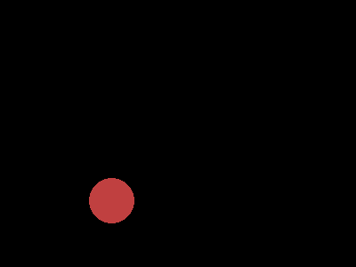
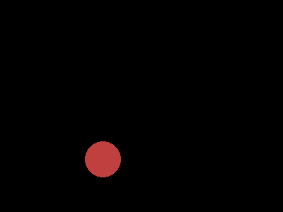
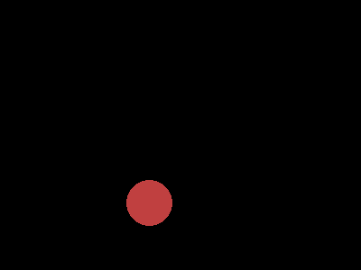

<!DOCTYPE html>

<html lang="ja">
  <head>
    <meta charset="utf-8" />
    <meta name="viewport" content="width=device-width, initial-scale=1.0" />
    <title>14. PNGアニメーション &#8212; Python Programming 2021  ドキュメント</title>
    
  <link href="_static/css/theme.css" rel="stylesheet" />
  <link href="_static/css/index.c5995385ac14fb8791e8eb36b4908be2.css" rel="stylesheet" />

    
  <link rel="stylesheet"
    href="_static/vendor/fontawesome/5.13.0/css/all.min.css">
  <link rel="preload" as="font" type="font/woff2" crossorigin
    href="_static/vendor/fontawesome/5.13.0/webfonts/fa-solid-900.woff2">
  <link rel="preload" as="font" type="font/woff2" crossorigin
    href="_static/vendor/fontawesome/5.13.0/webfonts/fa-brands-400.woff2">

    
      

    
    <link rel="stylesheet" href="_static/pygments.css" type="text/css" />
    <link rel="stylesheet" href="_static/sphinx-book-theme.acff12b8f9c144ce68a297486a2fa670.css" type="text/css" />
    <link rel="stylesheet" type="text/css" href="_static/copybutton.css" />
    
  <link rel="preload" as="script" href="_static/js/index.1c5a1a01449ed65a7b51.js">

    <script id="documentation_options" data-url_root="./" src="_static/documentation_options.js"></script>
    <script src="_static/jquery.js"></script>
    <script src="_static/underscore.js"></script>
    <script src="_static/doctools.js"></script>
    <script src="_static/clipboard.min.js"></script>
    <script src="_static/copybutton.js"></script>
    <script src="_static/translations.js"></script>
    <script crossorigin="anonymous" integrity="sha256-Ae2Vz/4ePdIu6ZyI/5ZGsYnb+m0JlOmKPjt6XZ9JJkA=" src="https://cdnjs.cloudflare.com/ajax/libs/require.js/2.3.4/require.min.js"></script>
    <script src="_static/sphinx-book-theme.12a9622fbb08dcb3a2a40b2c02b83a57.js"></script>
    <script async="async" src="https://cdnjs.cloudflare.com/ajax/libs/mathjax/2.7.7/latest.js?config=TeX-AMS-MML_HTMLorMML"></script>
    <script type="text/x-mathjax-config">MathJax.Hub.Config({"tex2jax": {"inlineMath": [["$", "$"], ["\\(", "\\)"]], "processEscapes": true, "ignoreClass": "document", "processClass": "math|output_area"}})</script>
    <link rel="index" title="索引" href="genindex.html" />
    <link rel="search" title="検索" href="search.html" />
    <link rel="prev" title="13. 深さ優先探索と幅優先探索" href="py13search.html" />
    <meta name="viewport" content="width=device-width, initial-scale=1" />
    <meta name="docsearch:language" content="en" />
    
  </head>
  <body data-spy="scroll" data-target="#bd-toc-nav" data-offset="80">
    
    <div class="container-fluid" id="banner"></div>

    

    <div class="container-xl">
      <div class="row">
          
<div class="col-12 col-md-3 bd-sidebar site-navigation show" id="site-navigation">
    
        <div class="navbar-brand-box">
    <a class="navbar-brand text-wrap" href="index.html">
      
      
      <h1 class="site-logo" id="site-title">Python Programming 2021  ドキュメント</h1>
      
    </a>
</div><form class="bd-search d-flex align-items-center" action="search.html" method="get">
  <i class="icon fas fa-search"></i>
  <input type="search" class="form-control" name="q" id="search-input" placeholder="ドキュメントを検索..." aria-label="ドキュメントを検索..." autocomplete="off" >
</form><nav class="bd-links" id="bd-docs-nav" aria-label="Main navigation">
    <div class="bd-toc-item active">
        <p class="caption">
 <span class="caption-text">
  Contents:
 </span>
</p>
<ul class="current nav bd-sidenav">
 <li class="toctree-l1">
  <a class="reference internal" href="py01oj.html">
   1. プログラミングの練習を始めよう
  </a>
 </li>
 <li class="toctree-l1">
  <a class="reference internal" href="py02eval.html">
   2. 変数を評価する
  </a>
 </li>
 <li class="toctree-l1">
  <a class="reference internal" href="py03if.html">
   3. 条件によって動作を変える
  </a>
 </li>
 <li class="toctree-l1">
  <a class="reference internal" href="py04forlist.html">
   4. リストと繰り返し
  </a>
 </li>
 <li class="toctree-l1">
  <a class="reference internal" href="py05string.html">
   5. 文字と情報
  </a>
 </li>
 <li class="toctree-l1">
  <a class="reference internal" href="py07func.html">
   6. 関数、再帰関数、そして高階関数
  </a>
 </li>
 <li class="toctree-l1">
  <a class="reference internal" href="py06tips.html">
   7. プログラミング上達のコツ
  </a>
 </li>
 <li class="toctree-l1">
  <a class="reference internal" href="py08algo.html">
   8. アルゴリズムを学ぶ
  </a>
 </li>
 <li class="toctree-l1">
  <a class="reference internal" href="py10prime.html">
   9. 整数アルゴリズム
  </a>
 </li>
 <li class="toctree-l1">
  <a class="reference internal" href="py09sort.html">
   10. ソートと計算量
  </a>
 </li>
 <li class="toctree-l1">
  <a class="reference internal" href="py11dict.html">
   11. 辞書を作ってみる
  </a>
 </li>
 <li class="toctree-l1">
  <a class="reference internal" href="py12dp.html">
   12. 動的計画法
  </a>
 </li>
 <li class="toctree-l1">
  <a class="reference internal" href="py13search.html">
   13. 深さ優先探索と幅優先探索
  </a>
 </li>
 <li class="toctree-l1 current active">
  <a class="current reference internal" href="#">
   14. PNGアニメーション
  </a>
 </li>
</ul>

    </div>
</nav> <!-- To handle the deprecated key -->

<div class="navbar_extra_footer">
  Theme by the <a href="https://ebp.jupyterbook.org">Executable Book Project</a>
</div>

</div>


          


          
<main class="col py-md-3 pl-md-4 bd-content overflow-auto" role="main">
    
    <div class="topbar container-xl fixed-top">
    <div class="topbar-contents row">
        <div class="col-12 col-md-3 bd-topbar-whitespace site-navigation show"></div>
        <div class="col pl-md-4 topbar-main">
            
            <button id="navbar-toggler" class="navbar-toggler ml-0" type="button" data-toggle="collapse"
                data-toggle="tooltip" data-placement="bottom" data-target=".site-navigation" aria-controls="navbar-menu"
                aria-expanded="true" aria-label="ナビゲーションを切り替え" aria-controls="site-navigation"
                title="ナビゲーションを切り替え" data-toggle="tooltip" data-placement="left">
                <i class="fas fa-bars"></i>
                <i class="fas fa-arrow-left"></i>
                <i class="fas fa-arrow-up"></i>
            </button>
            
            
<div class="dropdown-buttons-trigger">
    <button id="dropdown-buttons-trigger" class="btn btn-secondary topbarbtn" aria-label="このページをダウンロード"><i
            class="fas fa-download"></i></button>

    <div class="dropdown-buttons">
        <!-- ipynb file if we had a myst markdown file -->
        
        <!-- Download raw file -->
        <a class="dropdown-buttons" href="_sources/py14pil.ipynb.txt"><button type="button"
                class="btn btn-secondary topbarbtn" title="ソースファイルをダウンロード" data-toggle="tooltip"
                data-placement="left">.ipynb</button></a>
        <!-- Download PDF via print -->
        <button type="button" id="download-print" class="btn btn-secondary topbarbtn" title="PDFに印刷"
            onClick="window.print()" data-toggle="tooltip" data-placement="left">.pdf</button>
    </div>
</div>

            <!-- Source interaction buttons -->

<div class="dropdown-buttons-trigger">
    <button id="dropdown-buttons-trigger" class="btn btn-secondary topbarbtn"
        aria-label="Connect with source repository"><i class="fab fa-github"></i></button>
    <div class="dropdown-buttons sourcebuttons">
        <a class="repository-button"
            href="https://github.com/kkuramitsu/sphinx"><button type="button" class="btn btn-secondary topbarbtn"
                data-toggle="tooltip" data-placement="left" title="ソースリポジトリ"><i
                    class="fab fa-github"></i>リポジトリ</button></a>
        <a class="issues-button"
            href="https://github.com/kkuramitsu/sphinx/issues/new?title=Issue%20on%20page%20%2Fpy14pil.html&body=Your%20issue%20content%20here."><button
                type="button" class="btn btn-secondary topbarbtn" data-toggle="tooltip" data-placement="left"
                title="問題を開く"><i class="fas fa-lightbulb"></i>未解決の問題</button></a>
        
    </div>
</div>

            <!-- Full screen (wrap in <a> to have style consistency -->

<a class="full-screen-button"><button type="button" class="btn btn-secondary topbarbtn" data-toggle="tooltip"
        data-placement="bottom" onclick="toggleFullScreen()" aria-label="全画面モード"
        title="全画面モード"><i
            class="fas fa-expand"></i></button></a>

            <!-- Launch buttons -->

        </div>

        <!-- Table of contents -->
        <div class="d-none d-md-block col-md-2 bd-toc show">
            
            <div class="tocsection onthispage pt-5 pb-3">
                <i class="fas fa-list"></i> 目次
            </div>
            <nav id="bd-toc-nav">
                <ul class="visible nav section-nav flex-column">
 <li class="toc-h2 nav-item toc-entry">
  <a class="reference internal nav-link" href="#モジュールの準備">
   14.1. モジュールの準備
  </a>
 </li>
 <li class="toc-h2 nav-item toc-entry">
  <a class="reference internal nav-link" href="#PNG-画像">
   14.2. PNG 画像
  </a>
  <ul class="nav section-nav flex-column">
   <li class="toc-h3 nav-item toc-entry">
    <a class="reference internal nav-link" href="#キャンバス">
     14.2.1. キャンバス
    </a>
   </li>
   <li class="toc-h3 nav-item toc-entry">
    <a class="reference internal nav-link" href="#図形を描画する">
     14.2.2. 図形を描画する
    </a>
   </li>
   <li class="toc-h3 nav-item toc-entry">
    <a class="reference internal nav-link" href="#描画した図形を保存する">
     14.2.3. 描画した図形を保存する
    </a>
   </li>
   <li class="toc-h3 nav-item toc-entry">
    <a class="reference internal nav-link" href="#円">
     14.2.4. 円
    </a>
   </li>
  </ul>
 </li>
 <li class="toc-h2 nav-item toc-entry">
  <a class="reference internal nav-link" href="#アニメーションを作る">
   14.3. アニメーションを作る
  </a>
 </li>
 <li class="toc-h2 nav-item toc-entry">
  <a class="reference internal nav-link" href="#APNG-に変換する">
   14.4. APNG に変換する
  </a>
  <ul class="nav section-nav flex-column">
   <li class="toc-h3 nav-item toc-entry">
    <a class="reference internal nav-link" href="#ボールを投げるアニメ">
     14.4.1. ボールを投げるアニメ
    </a>
   </li>
  </ul>
 </li>
</ul>

            </nav>
        </div>
    </div>
</div>
    <div id="main-content" class="row">
        <div class="col-12 col-md-9 pl-md-3 pr-md-0">
        
              <div>
                
  
<style>
/* CSS for nbsphinx extension */

/* remove conflicting styling from Sphinx themes */
div.nbinput.container div.prompt *,
div.nboutput.container div.prompt *,
div.nbinput.container div.input_area pre,
div.nboutput.container div.output_area pre,
div.nbinput.container div.input_area .highlight,
div.nboutput.container div.output_area .highlight {
    border: none;
    padding: 0;
    margin: 0;
    box-shadow: none;
}

div.nbinput.container > div[class*=highlight],
div.nboutput.container > div[class*=highlight] {
    margin: 0;
}

div.nbinput.container div.prompt *,
div.nboutput.container div.prompt * {
    background: none;
}

div.nboutput.container div.output_area .highlight,
div.nboutput.container div.output_area pre {
    background: unset;
}

div.nboutput.container div.output_area div.highlight {
    color: unset;  /* override Pygments text color */
}

/* avoid gaps between output lines */
div.nboutput.container div[class*=highlight] pre {
    line-height: normal;
}

/* input/output containers */
div.nbinput.container,
div.nboutput.container {
    display: -webkit-flex;
    display: flex;
    align-items: flex-start;
    margin: 0;
    width: 100%;
}
@media (max-width: 540px) {
    div.nbinput.container,
    div.nboutput.container {
        flex-direction: column;
    }
}

/* input container */
div.nbinput.container {
    padding-top: 5px;
}

/* last container */
div.nblast.container {
    padding-bottom: 5px;
}

/* input prompt */
div.nbinput.container div.prompt pre {
    color: #307FC1;
}

/* output prompt */
div.nboutput.container div.prompt pre {
    color: #BF5B3D;
}

/* all prompts */
div.nbinput.container div.prompt,
div.nboutput.container div.prompt {
    width: 4.5ex;
    padding-top: 5px;
    position: relative;
    user-select: none;
}

div.nbinput.container div.prompt > div,
div.nboutput.container div.prompt > div {
    position: absolute;
    right: 0;
    margin-right: 0.3ex;
}

@media (max-width: 540px) {
    div.nbinput.container div.prompt,
    div.nboutput.container div.prompt {
        width: unset;
        text-align: left;
        padding: 0.4em;
    }
    div.nboutput.container div.prompt.empty {
        padding: 0;
    }

    div.nbinput.container div.prompt > div,
    div.nboutput.container div.prompt > div {
        position: unset;
    }
}

/* disable scrollbars on prompts */
div.nbinput.container div.prompt pre,
div.nboutput.container div.prompt pre {
    overflow: hidden;
}

/* input/output area */
div.nbinput.container div.input_area,
div.nboutput.container div.output_area {
    -webkit-flex: 1;
    flex: 1;
    overflow: auto;
}
@media (max-width: 540px) {
    div.nbinput.container div.input_area,
    div.nboutput.container div.output_area {
        width: 100%;
    }
}

/* input area */
div.nbinput.container div.input_area {
    border: 1px solid #e0e0e0;
    border-radius: 2px;
    /*background: #f5f5f5;*/
}

/* override MathJax center alignment in output cells */
div.nboutput.container div[class*=MathJax] {
    text-align: left !important;
}

/* override sphinx.ext.imgmath center alignment in output cells */
div.nboutput.container div.math p {
    text-align: left;
}

/* standard error */
div.nboutput.container div.output_area.stderr {
    background: #fdd;
}

/* ANSI colors */
.ansi-black-fg { color: #3E424D; }
.ansi-black-bg { background-color: #3E424D; }
.ansi-black-intense-fg { color: #282C36; }
.ansi-black-intense-bg { background-color: #282C36; }
.ansi-red-fg { color: #E75C58; }
.ansi-red-bg { background-color: #E75C58; }
.ansi-red-intense-fg { color: #B22B31; }
.ansi-red-intense-bg { background-color: #B22B31; }
.ansi-green-fg { color: #00A250; }
.ansi-green-bg { background-color: #00A250; }
.ansi-green-intense-fg { color: #007427; }
.ansi-green-intense-bg { background-color: #007427; }
.ansi-yellow-fg { color: #DDB62B; }
.ansi-yellow-bg { background-color: #DDB62B; }
.ansi-yellow-intense-fg { color: #B27D12; }
.ansi-yellow-intense-bg { background-color: #B27D12; }
.ansi-blue-fg { color: #208FFB; }
.ansi-blue-bg { background-color: #208FFB; }
.ansi-blue-intense-fg { color: #0065CA; }
.ansi-blue-intense-bg { background-color: #0065CA; }
.ansi-magenta-fg { color: #D160C4; }
.ansi-magenta-bg { background-color: #D160C4; }
.ansi-magenta-intense-fg { color: #A03196; }
.ansi-magenta-intense-bg { background-color: #A03196; }
.ansi-cyan-fg { color: #60C6C8; }
.ansi-cyan-bg { background-color: #60C6C8; }
.ansi-cyan-intense-fg { color: #258F8F; }
.ansi-cyan-intense-bg { background-color: #258F8F; }
.ansi-white-fg { color: #C5C1B4; }
.ansi-white-bg { background-color: #C5C1B4; }
.ansi-white-intense-fg { color: #A1A6B2; }
.ansi-white-intense-bg { background-color: #A1A6B2; }

.ansi-default-inverse-fg { color: #FFFFFF; }
.ansi-default-inverse-bg { background-color: #000000; }

.ansi-bold { font-weight: bold; }
.ansi-underline { text-decoration: underline; }


div.nbinput.container div.input_area div[class*=highlight] > pre,
div.nboutput.container div.output_area div[class*=highlight] > pre,
div.nboutput.container div.output_area div[class*=highlight].math,
div.nboutput.container div.output_area.rendered_html,
div.nboutput.container div.output_area > div.output_javascript,
div.nboutput.container div.output_area:not(.rendered_html) > img{
    padding: 5px;
    margin: 0;
}

/* fix copybtn overflow problem in chromium (needed for 'sphinx_copybutton') */
div.nbinput.container div.input_area > div[class^='highlight'],
div.nboutput.container div.output_area > div[class^='highlight']{
    overflow-y: hidden;
}

/* hide copybtn icon on prompts (needed for 'sphinx_copybutton') */
.prompt a.copybtn {
    display: none;
}

/* Some additional styling taken form the Jupyter notebook CSS */
div.rendered_html table {
  border: none;
  border-collapse: collapse;
  border-spacing: 0;
  color: black;
  font-size: 12px;
  table-layout: fixed;
}
div.rendered_html thead {
  border-bottom: 1px solid black;
  vertical-align: bottom;
}
div.rendered_html tr,
div.rendered_html th,
div.rendered_html td {
  text-align: right;
  vertical-align: middle;
  padding: 0.5em 0.5em;
  line-height: normal;
  white-space: normal;
  max-width: none;
  border: none;
}
div.rendered_html th {
  font-weight: bold;
}
div.rendered_html tbody tr:nth-child(odd) {
  background: #f5f5f5;
}
div.rendered_html tbody tr:hover {
  background: rgba(66, 165, 245, 0.2);
}
</style>
<div class="section" id="PNGアニメーション">
<h1><span class="section-number">14. </span>PNGアニメーション<a class="headerlink" href="#PNGアニメーション" title="このヘッドラインへのパーマリンク">¶</a></h1>
<p>いよいよ前期の授業は最終回になります。 後期の授業の予習としてアニメーション作成を紹介します。</p>
<div class="admonition note">
<p class="admonition-title">後期の授業</p>
<p>Pythonを用いて、オブジェクト指向プログラミングを学びながら、 アルゴリズムとデータ構造の理解を深めて予定です。 楽しく学習ができるようにアニメーションを作りながら学びます。</p>
</div>
<div class="section" id="モジュールの準備">
<h2><span class="section-number">14.1. </span>モジュールの準備<a class="headerlink" href="#モジュールの準備" title="このヘッドラインへのパーマリンク">¶</a></h2>
<p>Python で画像やアニメーションを扱うためには、ライブラリ(Python ではモジュールと呼ぶ)を使います。</p>
<ul class="simple">
<li><p><strong>Pillow(PIL) モジュール</strong>: Python で画像を簡単に扱うため</p></li>
<li><p><strong>APNG モジュール</strong>: アニメーション PNG を作成するため</p></li>
<li><p><strong>IPython モジュール</strong>: 画像/動画を Google Colaboratory 上に表示するため</p></li>
</ul>
<p>Google Colaboratory は、あらかじめよく使うモジュールがインストールされています。これらは、何も設定しなくても、<code class="docutils literal notranslate"><span class="pre">import</span></code>して使うことができます。</p>
<div class="nbinput nblast docutils container">
<div class="prompt highlight-none notranslate"><div class="highlight"><pre><span></span>[1]:
</pre></div>
</div>
<div class="input_area highlight-ipython3 notranslate"><div class="highlight"><pre>
<span></span><span class="kn">from</span> <span class="nn">PIL</span> <span class="kn">import</span> <span class="n">Image</span> <span class="p">,</span> <span class="n">ImageDraw</span>
<span class="kn">import</span> <span class="nn">IPython</span>

</pre></div>
</div>
</div>
<p>ただし、APNGモジュールは、インストールされていません。 このような場合は、<code class="docutils literal notranslate"><span class="pre">pip</span></code>を使って、インストールしてから、<code class="docutils literal notranslate"><span class="pre">import</span></code>します。</p>
<div class="nbinput docutils container">
<div class="prompt highlight-none notranslate"><div class="highlight"><pre><span></span>[2]:
</pre></div>
</div>
<div class="input_area highlight-ipython3 notranslate"><div class="highlight"><pre>
<span></span><span class="o">!</span>pip install APNG
<span class="kn">from</span> <span class="nn">apng</span> <span class="kn">import</span> <span class="n">APNG</span>

</pre></div>
</div>
</div>
<div class="nboutput nblast docutils container">
<div class="prompt empty docutils container">
</div>
<div class="output_area docutils container">
<div class="highlight"><pre>
Requirement already satisfied: APNG in /usr/local/lib/python3.9/site-packages (0.3.4)
</pre></div></div>
</div>
<div class="admonition note">
<p class="admonition-title">pip/pip3</p>
<p>コンピュータ環境にPython モジュールをインストールするためのUNIXコマンドです。</p>
</div>
</div>
<div class="section" id="PNG-画像">
<h2><span class="section-number">14.2. </span>PNG 画像<a class="headerlink" href="#PNG-画像" title="このヘッドラインへのパーマリンク">¶</a></h2>
<p>まず、PNG画像を作ってみます。</p>
<div class="section" id="キャンバス">
<h3><span class="section-number">14.2.1. </span>キャンバス<a class="headerlink" href="#キャンバス" title="このヘッドラインへのパーマリンク">¶</a></h3>
<p>画像を描画するキャンバス (canvas) を作ってお絵かきを始めます。</p>
<p><strong>大きさを指定して、キャンバスを作成する</strong></p>
<div class="nbinput nblast docutils container">
<div class="prompt highlight-none notranslate"><div class="highlight"><pre><span></span>[3]:
</pre></div>
</div>
<div class="input_area highlight-ipython3 notranslate"><div class="highlight"><pre>
<span></span><span class="n">canvas</span> <span class="o">=</span> <span class="n">Image</span><span class="o">.</span><span class="n">new</span><span class="p">(</span><span class="s2">&quot;RGB&quot;</span><span class="p">,</span> <span class="p">(</span><span class="mi">400</span><span class="p">,</span><span class="mi">300</span><span class="p">))</span>

</pre></div>
</div>
</div>
<p>キャンバスの大きさは、動画にすることを考えて、あまり大きくせず、400 x 300 くらいにしておきます。</p>
</div>
<div class="section" id="図形を描画する">
<h3><span class="section-number">14.2.2. </span>図形を描画する<a class="headerlink" href="#図形を描画する" title="このヘッドラインへのパーマリンク">¶</a></h3>
<p>実際の描画操作は、描画コンテキスト (draw) を作って行います。(この辺りの仕組みは、Python以外のプログラミング言語でもほぼ同じです。)</p>
<p><strong>キャンバスの描画コンテキストを作る</strong></p>
<div class="nbinput nblast docutils container">
<div class="prompt highlight-none notranslate"><div class="highlight"><pre><span></span>[4]:
</pre></div>
</div>
<div class="input_area highlight-ipython3 notranslate"><div class="highlight"><pre>
<span></span><span class="n">draw</span> <span class="o">=</span> <span class="n">ImageDraw</span><span class="o">.</span><span class="n">Draw</span><span class="p">(</span><span class="n">canvas</span><span class="p">)</span>

</pre></div>
</div>
</div>
<p>まずは、長方形 (rectangle) をキャンバス上に描画してみましょう。 fill は、塗りつぶす色を指定してます。</p>
<div class="nbinput nblast docutils container">
<div class="prompt highlight-none notranslate"><div class="highlight"><pre><span></span>[5]:
</pre></div>
</div>
<div class="input_area highlight-ipython3 notranslate"><div class="highlight"><pre>
<span></span><span class="n">draw</span><span class="o">.</span><span class="n">rectangle</span><span class="p">((</span><span class="mi">100</span><span class="p">,</span><span class="mi">100</span><span class="p">,</span><span class="mi">200</span><span class="p">,</span><span class="mi">200</span><span class="p">),</span> <span class="n">fill</span><span class="o">=</span><span class="s1">&#39;green&#39;</span><span class="p">)</span>

</pre></div>
</div>
</div>
</div>
<div class="section" id="描画した図形を保存する">
<h3><span class="section-number">14.2.3. </span>描画した図形を保存する<a class="headerlink" href="#描画した図形を保存する" title="このヘッドラインへのパーマリンク">¶</a></h3>
<p>キャンバスに描画した図形をPNGファイルに保存します。ファイル名は、なんでも構いませんが、拡張子は、<code class="docutils literal notranslate"><span class="pre">.png</span></code>にします。</p>
<div class="nbinput nblast docutils container">
<div class="prompt highlight-none notranslate"><div class="highlight"><pre><span></span>[6]:
</pre></div>
</div>
<div class="input_area highlight-ipython3 notranslate"><div class="highlight"><pre>
<span></span><span class="n">canvas</span><span class="o">.</span><span class="n">save</span><span class="p">(</span><span class="s2">&quot;rect.png&quot;</span><span class="p">)</span>

</pre></div>
</div>
</div>
<p>(Colab 上に)保存されたPNGファイルは、<code class="docutils literal notranslate"><span class="pre">IPython.display</span></code>で表示してみることができます。</p>
<div class="nbinput docutils container">
<div class="prompt highlight-none notranslate"><div class="highlight"><pre><span></span>[7]:
</pre></div>
</div>
<div class="input_area highlight-ipython3 notranslate"><div class="highlight"><pre>
<span></span><span class="n">IPython</span><span class="o">.</span><span class="n">display</span><span class="o">.</span><span class="n">Image</span><span class="p">(</span><span class="s2">&quot;rect.png&quot;</span><span class="p">)</span>

</pre></div>
</div>
</div>
<div class="nboutput nblast docutils container">
<div class="prompt highlight-none notranslate"><div class="highlight"><pre><span></span>[7]:
</pre></div>
</div>
<div class="output_area docutils container">

</div>
</div>
<div class="admonition note">
<p class="admonition-title">Let’s try</p>
<p>長方形の色や位置、大きさを変えて表示してみよう</p>
</div>
</div>
<div class="section" id="円">
<h3><span class="section-number">14.2.4. </span>円<a class="headerlink" href="#円" title="このヘッドラインへのパーマリンク">¶</a></h3>
<p>円も描画する ecllipse は、指定した短形におさまる楕円(円)を描画します。</p>
<div class="nbinput nblast docutils container">
<div class="prompt highlight-none notranslate"><div class="highlight"><pre><span></span>[8]:
</pre></div>
</div>
<div class="input_area highlight-ipython3 notranslate"><div class="highlight"><pre>
<span></span><span class="n">draw</span><span class="o">.</span><span class="n">ellipse</span><span class="p">((</span><span class="mi">250</span><span class="p">,</span><span class="mi">200</span><span class="p">,</span> <span class="mi">300</span><span class="p">,</span> <span class="mi">250</span><span class="p">),</span><span class="n">fill</span><span class="o">=</span><span class="p">(</span><span class="mi">192</span><span class="p">,</span> <span class="mi">64</span><span class="p">,</span> <span class="mi">64</span><span class="p">))</span>

</pre></div>
</div>
</div>
<p>今回は、色を RGB で指定しています。</p>
<p><a class="reference external" href="https://note.nkmk.me/python-pillow-imagedraw/">https://note.nkmk.me/python-pillow-imagedraw/</a></p>
</div>
</div>
<div class="section" id="アニメーションを作る">
<h2><span class="section-number">14.3. </span>アニメーションを作る<a class="headerlink" href="#アニメーションを作る" title="このヘッドラインへのパーマリンク">¶</a></h2>
<p>アニメーション（動画）は、複数の画像を作成し、パラパラ漫画と同じ原理で作ります。</p>
<p>まず、ボールが転がるアニメーションを作ってみましょう。 x 軸方向に +20 ずつ移動させながら、3枚ほど画像を作ります。</p>
<p><strong>ball0.png を作る</strong></p>
<div class="nbinput docutils container">
<div class="prompt highlight-none notranslate"><div class="highlight"><pre><span></span>[9]:
</pre></div>
</div>
<div class="input_area highlight-ipython3 notranslate"><div class="highlight"><pre>
<span></span><span class="n">canvas</span> <span class="o">=</span> <span class="n">Image</span><span class="o">.</span><span class="n">new</span><span class="p">(</span><span class="s2">&quot;RGB&quot;</span><span class="p">,</span> <span class="p">(</span><span class="mi">400</span><span class="p">,</span><span class="mi">300</span><span class="p">),</span> <span class="n">color</span><span class="o">=</span><span class="s1">&#39;black&#39;</span><span class="p">)</span>
<span class="n">draw</span> <span class="o">=</span> <span class="n">ImageDraw</span><span class="o">.</span><span class="n">Draw</span><span class="p">(</span><span class="n">canvas</span><span class="p">)</span>
<span class="n">draw</span><span class="o">.</span><span class="n">ellipse</span><span class="p">((</span><span class="mi">100</span><span class="p">,</span> <span class="mi">200</span><span class="p">,</span> <span class="mi">150</span><span class="p">,</span> <span class="mi">250</span><span class="p">),</span><span class="n">fill</span><span class="o">=</span><span class="p">(</span><span class="mi">192</span><span class="p">,</span> <span class="mi">64</span><span class="p">,</span> <span class="mi">64</span><span class="p">))</span>
<span class="n">canvas</span><span class="o">.</span><span class="n">save</span><span class="p">(</span><span class="s1">&#39;ball0.png&#39;</span><span class="p">)</span>
<span class="n">IPython</span><span class="o">.</span><span class="n">display</span><span class="o">.</span><span class="n">Image</span><span class="p">(</span><span class="s2">&quot;ball0.png&quot;</span><span class="p">)</span>

</pre></div>
</div>
</div>
<div class="nboutput nblast docutils container">
<div class="prompt highlight-none notranslate"><div class="highlight"><pre><span></span>[9]:
</pre></div>
</div>
<div class="output_area docutils container">

</div>
</div>
<p><strong>ball1.png を作る</strong></p>
<div class="nbinput docutils container">
<div class="prompt highlight-none notranslate"><div class="highlight"><pre><span></span>[10]:
</pre></div>
</div>
<div class="input_area highlight-ipython3 notranslate"><div class="highlight"><pre>
<span></span><span class="n">canvas</span> <span class="o">=</span> <span class="n">Image</span><span class="o">.</span><span class="n">new</span><span class="p">(</span><span class="s2">&quot;RGB&quot;</span><span class="p">,</span> <span class="p">(</span><span class="mi">400</span><span class="p">,</span><span class="mi">300</span><span class="p">),</span> <span class="n">color</span><span class="o">=</span><span class="s1">&#39;black&#39;</span><span class="p">)</span>
<span class="n">draw</span> <span class="o">=</span> <span class="n">ImageDraw</span><span class="o">.</span><span class="n">Draw</span><span class="p">(</span><span class="n">canvas</span><span class="p">)</span>
<span class="n">draw</span><span class="o">.</span><span class="n">ellipse</span><span class="p">((</span><span class="mi">100</span><span class="o">+</span><span class="mi">20</span><span class="p">,</span> <span class="mi">200</span><span class="p">,</span> <span class="mi">150</span><span class="o">+</span><span class="mi">20</span><span class="p">,</span> <span class="mi">250</span><span class="p">),</span><span class="n">fill</span><span class="o">=</span><span class="p">(</span><span class="mi">192</span><span class="p">,</span> <span class="mi">64</span><span class="p">,</span> <span class="mi">64</span><span class="p">))</span>
<span class="n">canvas</span><span class="o">.</span><span class="n">save</span><span class="p">(</span><span class="s1">&#39;ball1.png&#39;</span><span class="p">)</span>
<span class="n">IPython</span><span class="o">.</span><span class="n">display</span><span class="o">.</span><span class="n">Image</span><span class="p">(</span><span class="s2">&quot;ball1.png&quot;</span><span class="p">)</span>


</pre></div>
</div>
</div>
<div class="nboutput nblast docutils container">
<div class="prompt highlight-none notranslate"><div class="highlight"><pre><span></span>[10]:
</pre></div>
</div>
<div class="output_area docutils container">

</div>
</div>
<p><strong>ball2.png を作る</strong></p>
<div class="nbinput docutils container">
<div class="prompt highlight-none notranslate"><div class="highlight"><pre><span></span>[11]:
</pre></div>
</div>
<div class="input_area highlight-ipython3 notranslate"><div class="highlight"><pre>
<span></span><span class="n">canvas</span> <span class="o">=</span> <span class="n">Image</span><span class="o">.</span><span class="n">new</span><span class="p">(</span><span class="s2">&quot;RGB&quot;</span><span class="p">,</span> <span class="p">(</span><span class="mi">400</span><span class="p">,</span><span class="mi">300</span><span class="p">),</span> <span class="n">color</span><span class="o">=</span><span class="s1">&#39;black&#39;</span><span class="p">)</span>
<span class="n">draw</span> <span class="o">=</span> <span class="n">ImageDraw</span><span class="o">.</span><span class="n">Draw</span><span class="p">(</span><span class="n">canvas</span><span class="p">)</span>
<span class="n">draw</span><span class="o">.</span><span class="n">ellipse</span><span class="p">((</span><span class="mi">100</span><span class="o">+</span><span class="mi">40</span><span class="p">,</span> <span class="mi">200</span><span class="p">,</span> <span class="mi">150</span><span class="o">+</span><span class="mi">40</span><span class="p">,</span> <span class="mi">250</span><span class="p">),</span><span class="n">fill</span><span class="o">=</span><span class="p">(</span><span class="mi">192</span><span class="p">,</span> <span class="mi">64</span><span class="p">,</span> <span class="mi">64</span><span class="p">))</span>
<span class="n">canvas</span><span class="o">.</span><span class="n">save</span><span class="p">(</span><span class="s1">&#39;ball2.png&#39;</span><span class="p">)</span>
<span class="n">IPython</span><span class="o">.</span><span class="n">display</span><span class="o">.</span><span class="n">Image</span><span class="p">(</span><span class="s2">&quot;ball2.png&quot;</span><span class="p">)</span>

</pre></div>
</div>
</div>
<div class="nboutput nblast docutils container">
<div class="prompt highlight-none notranslate"><div class="highlight"><pre><span></span>[11]:
</pre></div>
</div>
<div class="output_area docutils container">

</div>
</div>
<div class="admonition warning">
<p class="admonition-title">Let’s try: 本来、１枚１枚作成してはいけません。</p>
<p>for文を使って、まとめて生成しましょう。</p>
</div>
</div>
<div class="section" id="APNG-に変換する">
<h2><span class="section-number">14.4. </span>APNG に変換する<a class="headerlink" href="#APNG-に変換する" title="このヘッドラインへのパーマリンク">¶</a></h2>
<p>Pillow/PILで保存したファイル名からファイルリストを作ります。</p>
<div class="nbinput nblast docutils container">
<div class="prompt highlight-none notranslate"><div class="highlight"><pre><span></span>[12]:
</pre></div>
</div>
<div class="input_area highlight-ipython3 notranslate"><div class="highlight"><pre>
<span></span><span class="n">filelist</span> <span class="o">=</span> <span class="p">[</span><span class="s1">&#39;ball0.png&#39;</span><span class="p">,</span> <span class="s1">&#39;ball1.png&#39;</span><span class="p">,</span> <span class="s1">&#39;ball2.png&#39;</span><span class="p">]</span>

</pre></div>
</div>
</div>
<p>APNG モジュールは、画像ファイルのリストからアニメーション PNG を作成します。delay は、画像 1 枚辺りの速度 (ミリ秒) です。</p>
<div class="nbinput nblast docutils container">
<div class="prompt highlight-none notranslate"><div class="highlight"><pre><span></span>[13]:
</pre></div>
</div>
<div class="input_area highlight-ipython3 notranslate"><div class="highlight"><pre>
<span></span><span class="n">APNG</span><span class="o">.</span><span class="n">from_files</span><span class="p">(</span><span class="n">filelist</span><span class="p">,</span> <span class="n">delay</span><span class="o">=</span><span class="mi">100</span><span class="p">)</span><span class="o">.</span><span class="n">save</span><span class="p">(</span><span class="s2">&quot;ball-anime.png&quot;</span><span class="p">)</span>

</pre></div>
</div>
</div>
<blockquote>
<div><p>注意: PNGアニメーションのファイル拡張子は、画像と同じ<code class="docutils literal notranslate"><span class="pre">.png</span></code>です。</p>
</div></blockquote>
<div class="admonition note">
<p class="admonition-title">Let’s try</p>
<p>実際にアニメーション (APNG) を作成して表示してみよう。 (大したアニメーションでないのでここは期待しないでください。) </p>
<div class="highlight-default notranslate"><div class="highlight"><pre><span></span><span class="n">IPython</span><span class="o">.</span><span class="n">display</span><span class="o">.</span><span class="n">Image</span><span class="p">(</span><span class="s2">&quot;ball-anime.png&quot;</span><span class="p">)</span>
</pre></div>
</div>
</div>
<div class="section" id="ボールを投げるアニメ">
<h3><span class="section-number">14.4.1. </span>ボールを投げるアニメ<a class="headerlink" href="#ボールを投げるアニメ" title="このヘッドラインへのパーマリンク">¶</a></h3>
<p>(例題) ボールがいい感じで放物運動するアニメーションを作ってみましょう。 時刻 t のときの (x,y) を次のようにします。(ここのパラメータは自由に調整して構いません。)</p>
<p><span class="math notranslate nohighlight">\(x = 10t + 100\)</span> <span class="math notranslate nohighlight">\(y = 2(t−10) +100\)</span></p>
<p>あとは、時刻を <code class="docutils literal notranslate"><span class="pre">for</span> <span class="pre">t</span> <span class="pre">in</span> <span class="pre">range(20)</span></code>: のようにループでまわして、画像を作ります。画像名は、 filelist に追加しておきます。</p>
<div class="nbinput docutils container">
<div class="prompt highlight-none notranslate"><div class="highlight"><pre><span></span>[14]:
</pre></div>
</div>
<div class="input_area highlight-ipython3 notranslate"><div class="highlight"><pre>
<span></span><span class="c1"># 放物線を関数で定義しておく</span>
<span class="k">def</span> <span class="nf">fy</span><span class="p">(</span><span class="n">t</span><span class="p">):</span>
    <span class="k">return</span> <span class="p">(</span><span class="n">t</span> <span class="o">-</span> <span class="mi">10</span><span class="p">)</span><span class="o">**</span><span class="mi">2</span> <span class="o">+</span> <span class="mi">100</span>

<span class="n">filelist</span> <span class="o">=</span> <span class="p">[]</span>
<span class="k">for</span> <span class="n">t</span> <span class="ow">in</span> <span class="nb">range</span> <span class="p">(</span><span class="mi">20</span><span class="p">):</span>
    <span class="n">canvas</span> <span class="o">=</span> <span class="n">Image</span><span class="o">.</span><span class="n">new</span><span class="p">(</span><span class="s2">&quot;RGB&quot;</span><span class="p">,</span> <span class="p">(</span><span class="mi">400</span><span class="p">,</span><span class="mi">300</span><span class="p">),</span> <span class="n">color</span><span class="o">=</span><span class="s2">&quot;black&quot;</span><span class="p">)</span>
    <span class="n">draw</span> <span class="o">=</span> <span class="n">ImageDraw</span><span class="o">.</span><span class="n">Draw</span><span class="p">(</span><span class="n">canvas</span><span class="p">)</span>
    <span class="n">x</span> <span class="o">=</span> <span class="mi">100</span> <span class="o">+</span> <span class="mi">10</span> <span class="o">*</span> <span class="n">t</span>
    <span class="n">y</span> <span class="o">=</span> <span class="n">fy</span><span class="p">(</span><span class="n">t</span><span class="p">)</span>
    <span class="n">draw</span><span class="o">.</span><span class="n">ellipse</span><span class="p">((</span><span class="n">x</span><span class="p">,</span> <span class="n">y</span><span class="p">,</span> <span class="n">x</span><span class="o">+</span><span class="mi">50</span><span class="p">,</span> <span class="n">y</span><span class="o">+</span><span class="mi">50</span><span class="p">),</span><span class="n">fill</span><span class="o">=</span><span class="p">(</span><span class="mi">192</span><span class="p">,</span> <span class="mi">64</span><span class="p">,</span> <span class="mi">64</span><span class="p">))</span>
    <span class="n">canvas</span><span class="o">.</span><span class="n">save</span><span class="p">(</span><span class="sa">f</span><span class="s2">&quot;ball</span><span class="si">{</span><span class="n">t</span><span class="si">}</span><span class="s2">.png&quot;</span><span class="p">)</span>
    <span class="n">filelist</span><span class="o">.</span><span class="n">append</span><span class="p">(</span><span class="sa">f</span><span class="s2">&quot;ball</span><span class="si">{</span><span class="n">t</span><span class="si">}</span><span class="s2">.png&quot;</span><span class="p">)</span>

<span class="n">APNG</span><span class="o">.</span><span class="n">from_files</span><span class="p">(</span><span class="n">filelist</span><span class="p">,</span> <span class="n">delay</span><span class="o">=</span><span class="mi">100</span><span class="p">)</span><span class="o">.</span><span class="n">save</span><span class="p">(</span><span class="s2">&quot;ball-anime.png&quot;</span><span class="p">)</span>
<span class="n">IPython</span><span class="o">.</span><span class="n">display</span><span class="o">.</span><span class="n">Image</span><span class="p">(</span><span class="s2">&quot;ball-anime.png&quot;</span><span class="p">)</span>

</pre></div>
</div>
</div>
<div class="nboutput nblast docutils container">
<div class="prompt highlight-none notranslate"><div class="highlight"><pre><span></span>[14]:
</pre></div>
</div>
<div class="output_area docutils container">

</div>
</div>
</div>
</div>
</div>


              </div>
              
        
        <div class='prev-next-bottom'>
            
    <a class='left-prev' id="prev-link" href="py13search.html" title="previous page"><span class="section-number">13. </span>深さ優先探索と幅優先探索</a>

        </div>
        
        </div>
    </div>
    <footer class="footer mt-5 mt-md-0">
    <div class="container">
      <p>
        
          沿って Kimio Kuramitsu<br/>
        
            &copy; 著作権 2021, 倉光君郎(Kimio Kuramitsu).<br/>
      </p>
    </div>
  </footer>
</main>


      </div>
    </div>
  
  <script src="_static/js/index.1c5a1a01449ed65a7b51.js"></script>

  
  </body>
</html>